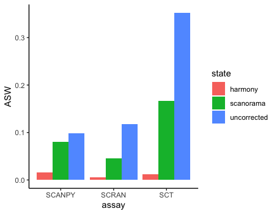

Data Integration
Connor H Knight & Faraz Khan
11/08/2021
integration.RmdIt is common in single-cell analyses to integrate multiple samples. There are numerous package available for do this, however they function differently and generate different results.Therefore, it is becoming necessary to benchmark a few options before deciding on a method. For this, IBRAP contains 4 integration methods and benchmarking capabilities to distinguish the best solution.
Integrating Multiple Datasets
For this tutorial, we have supplied two well characterised pancreas samples: CELseq2 and Smartseq2 which contain 2285 and 2394 cells, respectively.
You can download the data for this tutorial using the following links:
https://www.dropbox.com/s/heughk2kl0lg6qc/smartseq2.rds?dl=0 https://www.dropbox.com/s/txlq7875wkthb3y/celseq2.rds?dl=0
Creating IBRAP objects
library(IBRAP)
celseq2_items <- readRDS('/Users/knight05/work/Results/scRNA-seq/IBRAP_tutorials/integration_analysis/celseq2.rds')
smartseq2_items <- readRDS('/Users/knight05/work/Results/scRNA-seq/IBRAP_tutorials/integration_analysis/smartseq2.rds')
# Here we set the maximum amount of RAM R may use, for this we have allowed 4GB
options(future.globals.maxSize = 4000 * 1024^2)
celseq2_items <- readRDS('~/path/to/celseq2/celseq2.rds')
smartseq2_items <- readRDS('~/path/to/celseq2/celseq2.rds')
celseq2 <- createIBRAPobject(counts = celseq2,
meta.data = celseq2_items$metadata,
original.project = 'celseq2',
method.name = 'RAW',
min.cells = 3,
min.features = 200)
smartseq2 <- createIBRAPobject(counts = smartseq2,
meta.data = smartseq2_items$metadata,
original.project = 'smartseq2',
method.name = 'RAW',
min.cells = 3,
min.features = 200)Merging IBRAP objects
Datasets are then merged together. WARNING: Datasets can only be merged straight after their creation with no downstream results.
pancreas <- merge(x = celseq2, y = smartseq2)Pre-processing & Batch Visualisation
We then continue our analysis as normal up until PCA reduction:
pancreas <- perform.sct(object = pancreas,
assay = 'RAW',
slot = 'counts')
pancreas <- perform.scran(object = pancreas,
assay = 'RAW',
slot = 'counts',
vars.to.regress = 'RAW_total.counts')
pancreas <- perform.scanpy(object = pancreas,
vars.to.regress = 'RAW_total.counts')
pancreas <- perform.pca(object = pancreas,
assay = c('SCT', 'SCRAN', 'SCANPY'),
n.pcs = 50, reduction.save = 'pca')
pancreas <- perform.umap(object = pancreas,
assay = c('SCT', 'SCRAN', 'SCANPY'),
reduction = c('pca'),
n_components = 2)Now that we have pre-processed our data, lets take a look at the unintegrated batches:
plot1 <- plot.reduced.dim(object = pancreas, reduction = 'PCA_UMAP', assay = 'SCT',
clust.method = 'metadata', column = 'original.project', pt.size = 0.1) +
ggplot2::ggtitle('SCT') +
ggplot2::theme(plot.title = ggplot2::element_text(hjust = 0.5))
plot2 <- plot.reduced.dim(object = pancreas, reduction = 'PCA_UMAP', assay = 'SCRAN',
clust.method = 'metadata', column = 'original.project', pt.size = 0.1) +
ggplot2::ggtitle('SCRAN') +
ggplot2::theme(plot.title = ggplot2::element_text(hjust = 0.5))
plot3 <- plot.reduced.dim(object = pancreas, reduction = 'PCA_UMAP', assay = 'SCANPY',
clust.method = 'metadata', column = 'original.project', pt.size = 0.1) +
ggplot2::ggtitle('SCANPY') +
ggplot2::theme(plot.title = ggplot2::element_text(hjust = 0.5))
egg::ggarrange(plots = list(plot1, plot2, plot3), ncol = 3)

As we can see there are profound differences between the samples due to technical variation. This requires correction.
Integration Techniques
We have included 4 integration techniques:
- Seurat CCA (counts)
- Scanorama (counts)
- BBKNN (reduction)
- Harmony (reduction)
Some integration methods either correct the normalised counts or the reduction components. For this tutorial, we will compare Scanorama which corrects the counts and Harmony which corrects reductions.
Integration Application & Visualisaiton
pancreas <- perform.harmony(object = pancreas,
assay = c('SCRAN', 'SCT', 'SCANPY'),
vars.use = 'original.project',
reduction = c('pca'),
max.iter.harmony = 100,
dims.use = list(NULL))
Harmony accepts reduced embeddings and produces a new reduced embedding called harmony reducitons. These reductions can then be used to produce nearest neighbourhood graphs, any clusxtering method, and any reduction method. Harmony functions well since you can adjust the aggressiveness of the correction per covariate that you specify using the theta parameter.
pancreas <- perform.scanorama(object = pancreas,
assay = c('SCT', 'SCRAN', 'SCANPY'),
slot = 'norm.scaled',
split.by = 'original.project',
n.dims = 50)Rather than functioning on reduced embeddings, scanorama uses the @norm.scaled slot of the method assay and stitches together the batches in order of similarity. Scanorama produces a reduced embedding that can be used for nearest neighbourhood graph generation, any clustering method, and non-linear reduction method.
pancreas <- perform.umap(object = pancreas,
assay = c('SCT', 'SCRAN', 'SCANPY'),
reduction = c('pca_harmony', 'scanorama'),
n_components = 2,
n.dims = list(50, 50))We next created UMAPP reduced embeddings from the previously generated corrected reduced embeddings, including: PCA_HARMONY and SCANORAMA.
plot.list <- list()
plot.list[[1]] <- plot.reduced.dim(object = pancreas, reduction = 'PCA_HARMONY_UMAP', assay = 'SCT',
clust.method = 'metadata', column = 'original.project', pt.size = 0.1) +
ggplot2::ggtitle('SCT_harmony') +
ggplot2::theme(plot.title = ggplot2::element_text(hjust = 0.5))
plot.list[[2]] <- plot.reduced.dim(object = pancreas, reduction = 'PCA_HARMONY_UMAP', assay = 'SCRAN',
clust.method = 'metadata', column = 'original.project', pt.size = 0.1) +
ggplot2::ggtitle('SCRAN_harmony') +
ggplot2::theme(plot.title = ggplot2::element_text(hjust = 0.5))
plot.list[[3]] <- plot.reduced.dim(object = pancreas, reduction = 'PCA_HARMONY_UMAP', assay = 'SCANPY',
clust.method = 'metadata', column = 'original.project', pt.size = 0.1) +
ggplot2::ggtitle('SCANPY_harmony') +
ggplot2::theme(plot.title = ggplot2::element_text(hjust = 0.5))
plot.list[[4]] <- plot.reduced.dim(object = pancreas, reduction = 'SCANORAMA_UMAP', assay = 'SCT',
clust.method = 'metadata', column = 'original.project', pt.size = 0.1) +
ggplot2::ggtitle('SCT_SCANORAMA') +
ggplot2::theme(plot.title = ggplot2::element_text(hjust = 0.5))
plot.list[[5]] <- plot.reduced.dim(object = pancreas, reduction = 'SCANORAMA_UMAP', assay = 'SCRAN',
clust.method = 'metadata', column = 'original.project', pt.size = 0.1) +
ggplot2::ggtitle('SCRAN_SCANORAMA') +
ggplot2::theme(plot.title = ggplot2::element_text(hjust = 0.5))
plot.list[[6]] <- plot.reduced.dim(object = pancreas, reduction = 'SCANORAMA_UMAP', assay = 'SCANPY',
clust.method = 'metadata', column = 'original.project', pt.size = 0.1) +
ggplot2::ggtitle('SCANPY_SCANORAMA') +
ggplot2::theme(plot.title = ggplot2::element_text(hjust = 0.5))
egg::ggarrange(plots = plot.list, nrow = 2, ncol = 3)From initial inspection we can see that some worked better than others. For example scran normalisation with harmony integration seems to produce a great overlap of batches. However, we cannot soley rely on subjective visualisation of the batches to determine which worked best. To help us understand the results we have included benchmarking.
Benchmarking Integration
Our benchmarking involves the same methodology proposed in the SCONE. An Average Silhouette Width assesses the closeness of the batches in comparison to the uncorrected version.
previously we calcualted the UMAP reductions for the uncorrected PCA and the corrected: harmony and scanorama data. We can use the UMAP reductions to assess the effectiveness of the data using this function:
pancreas <- benchmark.intergation(object = pancreas,
batch = 'original.project', assays = c('SCT','SCRAN','SCANPY'),
reduction = c('PCA_UMAP', 'PCA_HARMONY_UMAP',
'SCANORAMA_UMAP'),
result.names = c('uncorrected', 'harmony', 'scanorama'),
n.components = 2)
# we can plot the results with the following command
plot.integration.benchmarking(object = pancreas, assay = c('SCT','SCRAN','SCANPY'))
For Average Silhouette Width (ASW) when observing clustering (biological effects) we wish to see a higher value. However, when reducing batches we wish to see a more negative value (even a negative value). As you can see, the uncorrected version has a high ASW value which indicates profound batch effects are present. Whereas, we can see the batch correction methods have reducd the batch effects to varying degrees. For example, harmony seems to reduced the batch effect the best across all normalisation methods. Scanorama however performed less successfully. However, you should not use this as an absolute recommendation for which reduction to proceed with.
From this point, we can continue the analysis as usual, using these integrated reductions to cluster our cells and identify their biological assignments.
Benchmarking integration is useful since you can evidently witness that integration methods behave differently and produce varying results. IBRAP enables you to benchmark four different techniques and select the best option for your dataset!